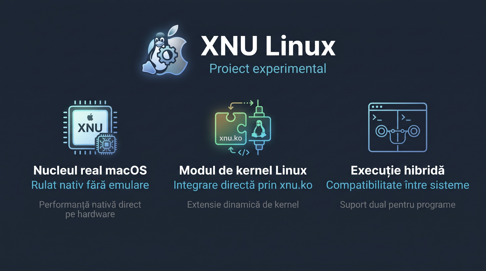

XNU Linux: Un proiect experimental rulează nucleul real macOS direct ca modul de kernel Linux (xnu.ko)

Proiectul experimental XNU Linux (dezvoltat de Heyang Zhou, unul dintre creatorii Deno Deploy) demonstrează o abordare neconvențională pentru rularea aplicațiilor macOS pe Linux: în loc să utilizeze virtualizarea tradițională sau straturi de traducere a apelurilor de sistem (precum Darling), acesta compilează nucleul open-source XNU al Apple și îl încarcă direct ca un modul de kernel Linux (xnu.ko), permițând proceselor macOS să ruleze nativ alături de cele Linux.
1. Arhitectura hibridă: Modulele xnu.ko și fki.ko
Execuție fără hypervisor între nuclee: Odată încărcat într-un kernel Linux ARM64, modulul
xnu.koare acces direct la procesor și la unitatea de gestionare a memoriei (MMU), astfel încât ambele sisteme de operare partajează aceleași nuclee CPU fără a fi separate de un hypervisor.Foreign Kernel Interface (
fki.ko): Un al doilea modul de kernel Linux, numitfki.ko, oferă o interfață prin care XNU primește acces la memorie, timere, operațiuni cu fișiere, rețelistică și alte resurse gestionate de Linux. Fiecare CPU găzduit al XNU rulează ca un fir de execuție al kernelului Linux (kernel thread) fixat (pinned) pe un nucleu fizic al gazdei, în timp ce Linux administrează hardware-ul de bază și redirecționează excepțiile relevante către XNU.Extensii de kernel și accelerare grafică (Metal → Vulkan): Proiectul include extensii de kernel pentru stocare (folosind o imagine de disc găzduită pe Linux), afișaj, tastatură/mouse, rețea Ethernet și grafică — subsistemul grafic traducând API-ul Metal de la Apple către Vulkan și accesând GPU-ul gazdei prin driverul Venus din Mesa.
2. Ce funcționează și care sunt limitările actuale
Mediul macOS funcțional: Conform documentației, dezvoltatorul a reușit să pornească macOS 27.2.1 până la un desktop complet funcțional peste un kernel standard Ubuntu Linux, rulând componente precum
loginwindow,WindowServer, Dock, Finder, Safari și Chrome, alături de căutarea Spotlight și accesul la sistemul de fișiere.Cerințe hardware stricte: În prezent, XNU Linux necesită un mediu Linux ARM64 cu suport pentru autentificarea pointerilor (pointer authentication), ceea ce îl restricționează la dispozitive Apple Silicon (M1 sau mai nou). Configurația documentată rulează Linux într-o mașină virtuală folosind
krunkitsauTart(deci există un strat de virtualizare sub Linux, dar niciun hypervisor suplimentar între Linux și nucleul XNU încărcat).Cerințe de memorie și licențiere: Necesită cel puțin 16 GB RAM (dintre care 8 GB rezervați pentru kernelul macOS găzduit) și o instalare separată de macOS creată cu installer-ul oficial Apple, depozitul proiectului nedistribuind binare proprietare Apple.